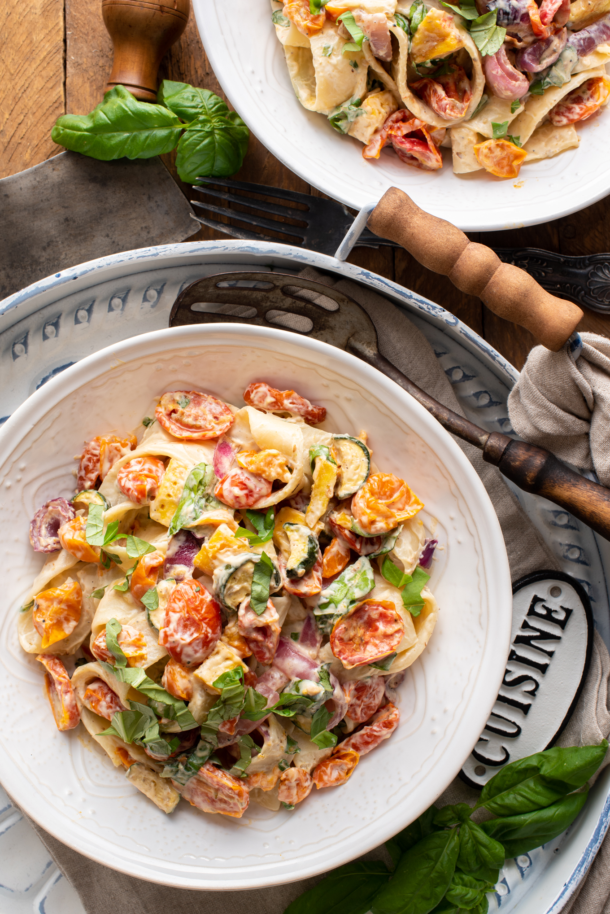
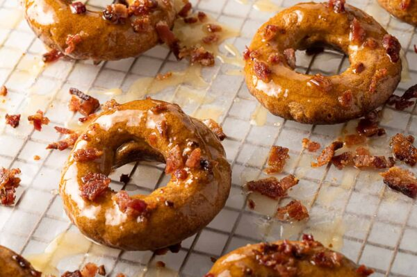

Cook Book
Home
Explore
View Your Saved Recipes
Save A Recipe▼
Create Your Own Recipe
Save a Recipe from a Website
Welcome to your own personal online cookbook!

Creamy Roasted Vegetable Pasta from Planted and Picked.
Click here to get this delicious recipe!

Maple Bacon Donuts from The Hangry Woman.
Click here to get this delicious recipe!
⟨
⟩